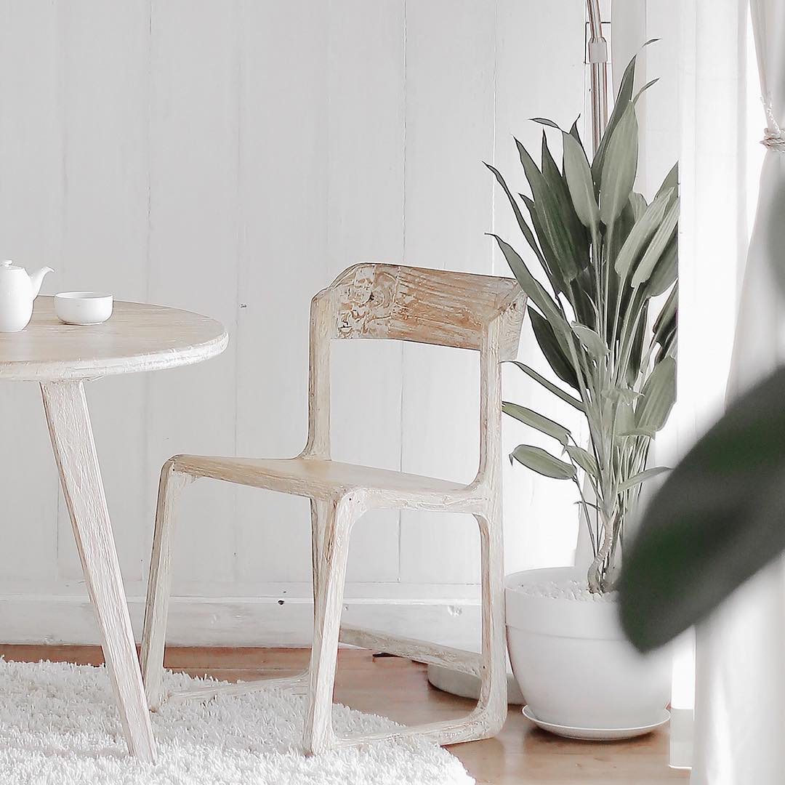
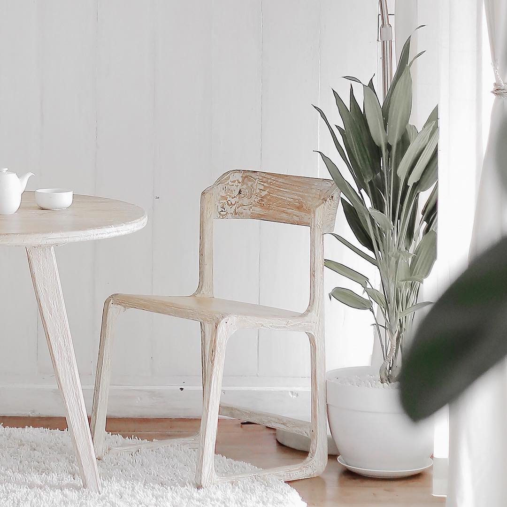
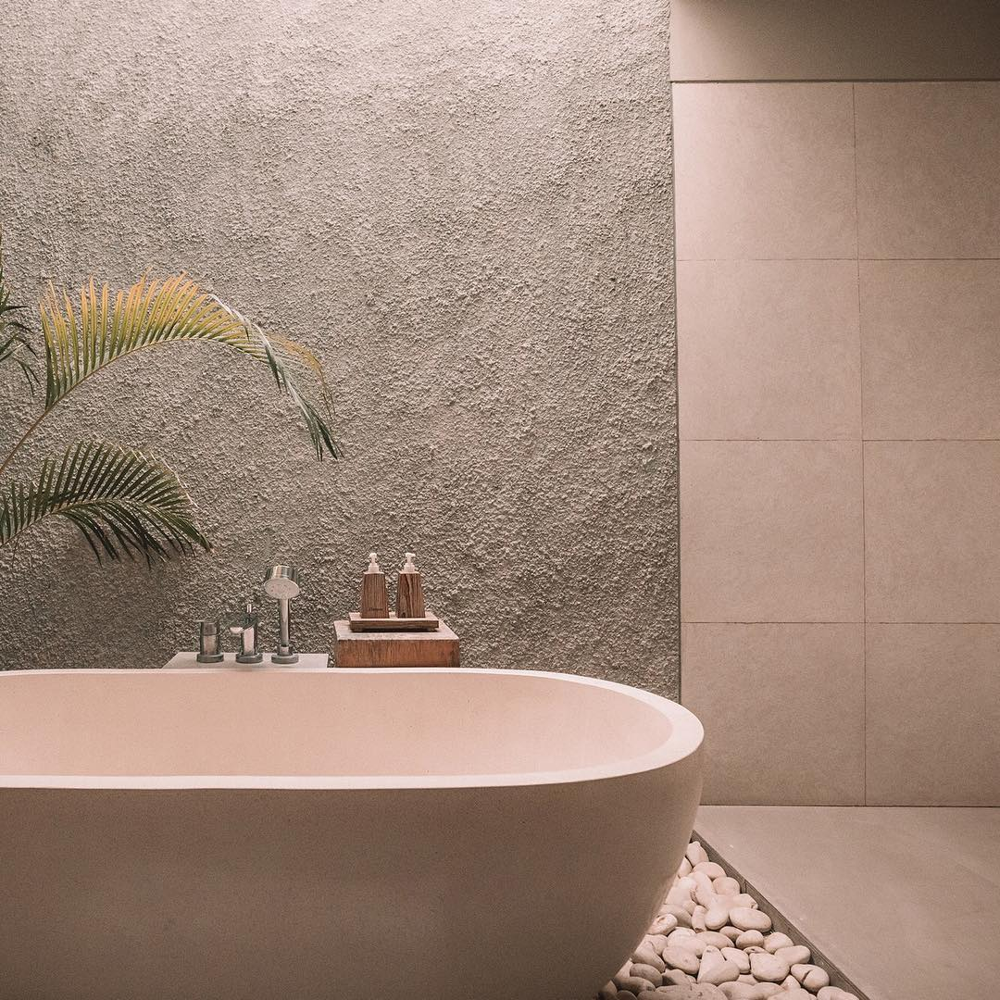
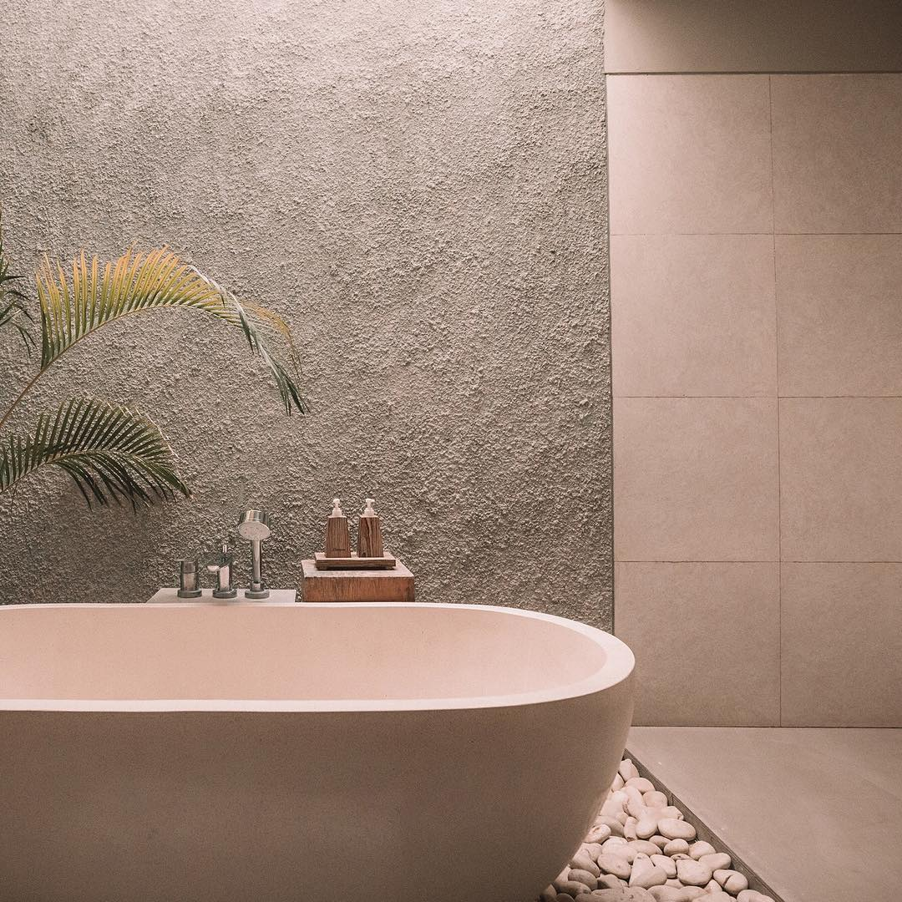

Our Favourites
QUEEN BEE
Return the gratitude and care to your Queen of the hive this Mother’s Day with our deeply nourishing Queen Bee Soap. This honey colored soap is flecked with calendula blossoms and made with beeswax and honey from local hives in Alberta. The luxurious lather combined with floral notes of jasmine, ylang ylang and geranium are sure to make even the busiest of bees feel like a Queen.
Shop nowLAVENDER EARL
Our limited edition Lavender Earl Grey scent is back - and the family has grown! It’s the delicate floral you know and love with a citrus tea twist. Lavender and bergamot essential oils are the foundation of this bar.Clary sage relaxes and soothes skin while shea butter and coconut oil softens and hydrates.
Shop now 



 
